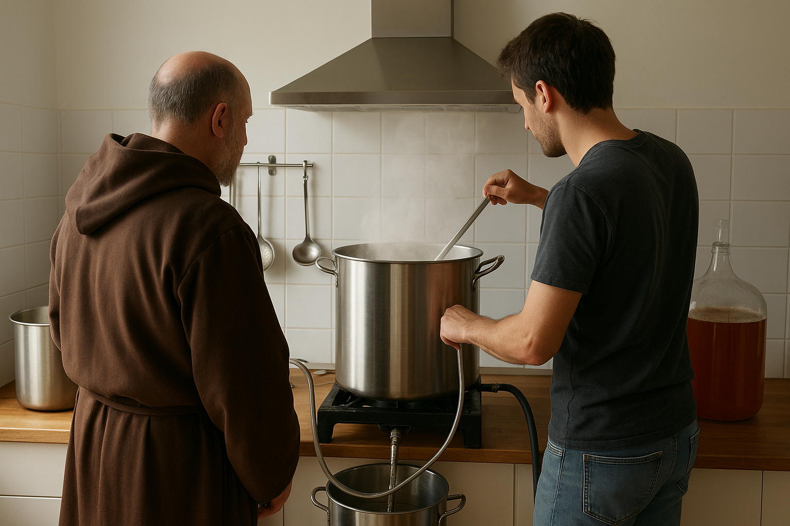
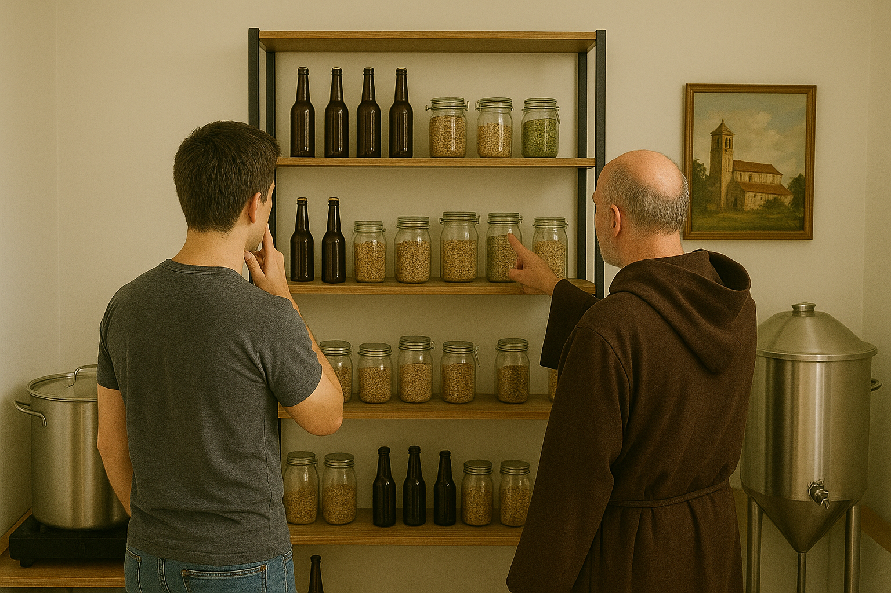

PASADO
Todo nació de una locura entre amigos durante la pandemia. Nuestro primer equipo era un caos, y solo logramos hacer tandas de 5 litros. Pero esa pequeña escala nos permitió obsesionarnos con el detalle, la disciplina y el proceso. Lo que empezó como un hobby para matar el tiempo, se convirtió en nuestra misión: demostrar que la mejor cerveza es la que se hace con el corazón.
Ya no somos solo "los amigos que hacen cerveza". Hoy, somos cerveceros serios, y aunque crecimos a batches de 20 litros, mantenemos ese espíritu artesanal inicial. Esta escala reducida nos permite estar en constante formación y nunca dejar de probar nuevas recetas y variaciones. El resultado: una cerveza que siempre está mejorando, porque nos obsesiona la calidad y el sabor.
PRESENTE
FUTURO
No nos conformamos con lo clásico. Miramos hacia adelante con sed de aventura. Queremos explorar cada rincón del mapa cervecero: experimentar con nuevos lúpulos, atrevernos con estilos inesperados e innovar constantemente. Nuestro compromiso es simple: seguir creando cervezas que sorprendan y que nos den ganas de compartir con ustedes. ¡Prepárense para las próximas locuras que salgan de nuestros pequeños batches!
